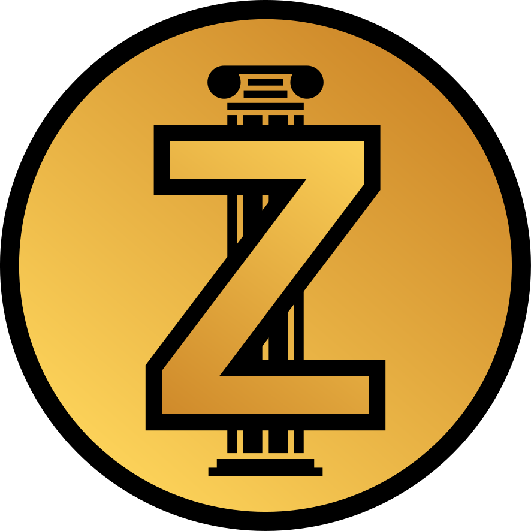
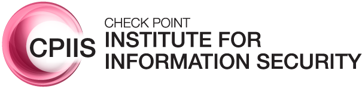
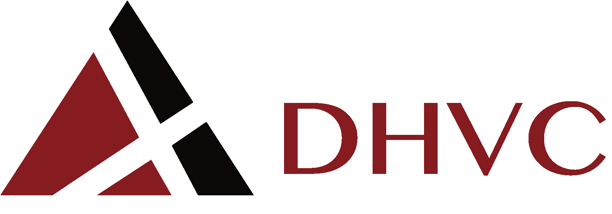
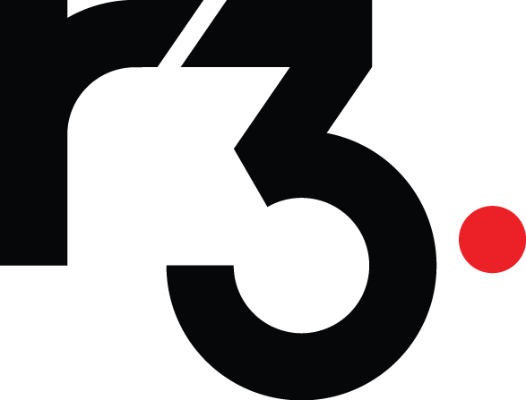
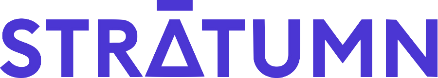
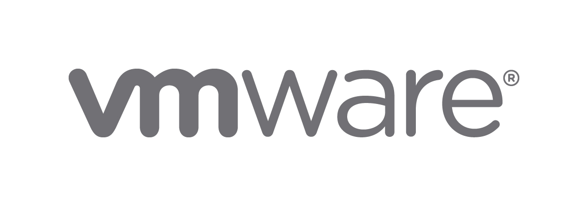

The 1st ZKProof Standards Workshop
10-11th May, 2018
ZKProof
Zero Knowledge Proofs are a cutting edge cryptographic tool that is starting to see adoption. This breakthrough technology forms the basis of several cryptographic applications, improving the trade-offs between data privacy and integrity. Zero Knowledge Proofs allow a prover to convince a verifier that some computational statement is correct without revealing any information except the veracity of the statement.
ZKProof.org is an open initiative of industry and academia to standardize the use of zero knowledge proofs. We are planning several workshops to standardize the security, implementation, applications and all other related aspects of this technology. The first workshop will take place in Boston in mid May and will bring together for the first time academic and industry experts in the field.
Join the ZKProof Standards Community mailing list to keep upt to date with all the developments.
Steering Committee Members:
- Ran Canetti - Boston University, Tel Aviv University
- Shafi Goldwasser - MIT, Weizmann Institute, Berkeley University
- Yuval Ishai - Technion
- Hugo Krawczyk - IBM T.J. Watson Research Center
- Elaine Shi - Cornell University, IC3
- Eran Tromer - Tel Aviv University, Columbia University
- Muthu Venkitasubramaniam - University of Rochester
- Aviv Zohar - Hebrew University, QED-it
We appreciate the support of our sponsors
Platinum Sponsors
- 
Gold Sponsor
- 
Silver Sponsors

- 
- 
- 
- 